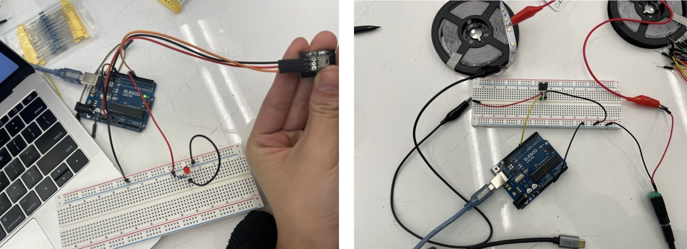

Mai Li's Assignment 5!
Overview:
For A5, I tried very hard to do this as linearly as possible like in A1-A3; however, it was similar to A4 instead. I
didn't know exactly what I was doing as we were warned in class that now we could really bust our Arduinos if we had
stray wires or misconnections. Not wanting to mess up, I looked up more videos on transistors.
Transistors Explained - How transistors work: https://www.youtube.com/watch?v=J4oO7PT_nzQ
MOSFET Explained - How MOSFET Works: https://www.youtube.com/watch?v=AwRJsze_9m4
MOSFETs and Transistors with Arduino: https://www.youtube.com/watch?v=IG5vw6P9iY4
After learning more and understand that the transistor is powered by a small current, from the Arduino, which then controls
a bigger current, from the power supply, I had more of an idea of what I could create. I already had some ideas, but I
settled on controlling the motor and fan with a remote. My brother has many, many, many fans, all of which have a power
button and 3 speed settings.
I used two circuits we have done in class: using the remote control and then using a MOSFET transistor with an LED
light strip.

Inspiration circuits from class.
Left is turning a LED on with a remote. Right is using a MOSFET transistor
to control an LED light strip.
With these in mind, I was thinking I could just swap the LED strip with the motor and change the button code for the
remote to be associated with different fan speeds. But before I went ahead, I did make sure with my professors so I
didn't accidently blow something up and they agreed it worked!
A5: High(er) voltage and transistors! motor schematic photo.
Resistance Use
Circuit photo with IRemote receiver a the top of the bread board and the motor connected to external power in
the middle with a flyback diode at the bottom.
// Mai Li Jorgensen
// HCDE 439
// A5: High(er) voltage and transistors!
// DISCLAIMER: some of the code is taken from the remote library example.
/*
* Specify which protocol(s) should be used for decoding.
// Makes the process faster as the remote will look for all protocol if one isn't defined
* If no protocol is defined, all protocols are active.
*/
#define DECODE_NEC 1
// add the remote library
#include < IRremote.h >
//define variables
int remote_pin = 2;
//PWM pin to analogWrite the speeds
int motor_pin = 9;
void setup() {
// how fast data is sent/received in bits per second
Serial.begin(115200);
// Just to know which program is running on my Arduino -- *all taken from example*
// (F()) stores this information in Flash memory
/ __FILE__ adds the file name of the sketch
// __DATE__ adds the date of the last compiled sketch
// VERSION_IRREMOTE adds version of the library being used
Serial.println(F("START " __FILE__ " from " __DATE__ "\r\nUsing library version " VERSION_IRREMOTE));
// initialize the pin that the receiver is on
// blink when the IR signal is first received
IrReceiver.begin(remote_pin, ENABLE_LED_FEEDBACK);
// prints a confirmation of which pin the remote is being received at
Serial.print(F("Ready to receive IR signals at pin "));
Serial.println(remote_pin);
// initialize the motor pin
pinMode(motor_pin, OUTPUT);
}
void loop() {
// checks to see if the remote receiver got a signal from the remote that a button was pressed
// if it gets a signal, it returns True and this code runs
if (IrReceiver.decode()) {
// Only print UNKNOWN commands detected
if (IrReceiver.decodedIRData.protocol == UNKNOWN) {
IrReceiver.printIRResultShort(&Serial);
IrReceiver.printIRResultRawFormatted(&Serial, true);
}
// Print a short summary of received data
//IrReceiver.printIRResultShort(&Serial);
// is the signal is not known, print a formatted raw data to see the issue
//if (IrReceiver.decodedIRData.protocol == UNKNOWN) {
//IrReceiver.printIRResultRawFormatted(&Serial, true);
//}
// print blank line
Serial.println();
// resets the receiver and allows to get another input from the remote.
IrReceiver.resume();
// better readability for the four different commands than an if-statement
switch (IrReceiver.decodedIRData.command){
// if power button is pressed, write comment and turn PWM to 0
case 0x45:
Serial.println("Fan Off");
analogWrite(motor_pin, 0);
// delay one second
delay (1000);
break;
// if number 1 is pressed, turn fan to a low PWM speed and print comment
case 0xC:
Serial.println("Speed 1");
analogWrite(motor_pin, 85);
// delay one second
delay (1000);
break;
// if button 2 is pressed, turn fan higher and write comment
case 0x18:
Serial.println("Speed 2");
analogWrite(motor_pin, 170);
// delay one second
delay (1000);
break;
// if button 3 is pressed, turn fan highest and write comment
case 0x5E:
Serial.println("Speed 3");
analogWrite(motor_pin, 255);
// delay one second
delay (1000);
break;
}
}
}
A Complete Switch!
After spending a lot more time on this circuit, I still couldn't figure out why the circuit wasn't working how I wanted.
Either the motor never turned on or it made sounds but no motion was seen. I tried really hard to debug the code, the
circuit, and the logic I was using to try to piece together everything. In the end, I decided that I had to get this
assignment in, even if that meant not doing my original plan of making a speed controlled fan for my brother.
A5: High(er) voltage and transistors! LED strip schematic photo.
A5: High(er) voltage and transistors! LED strip circuit photo
GIF

Code
// Mai Li Jorgensen
// HCDE 439
// A5: High(er) voltage and transistors!
// DISCLAIMER: some of the code is taken from the remote library example.
/*
* Specify which protocol(s) should be used for decoding.
// Makes the process faster as the remote will look for all protocol if one isn't defined
* If no protocol is defined, all protocols are active.
*/
//#define DECODE_NEC 1
// add the remote library
#include < IRremote.h >
//define pins
int remote_pin = 2;
//PWM pin to analogWrite the speeds
int LED_pin = 9;
// brightness variable to control the up or down of the LED string
int bright = 0;
void setup() {
// how fast data is sent/received in bits per second
Serial.begin(115200);
// Just to know which program is running on my Arduino -- *all taken from example*
// (F()) stores this information in Flash memory
// __FILE__ adds the file name of the sketch
// __DATE__ adds the date of the last compiled sketch
// VERSION_IRREMOTE adds version of the library being used
Serial.println(F("START " __FILE__ " from " __DATE__ "\r\nUsing library version " VERSION_IRREMOTE));
// initialize the pin that the receiver is on
// blink when the IR signal is first received
IrReceiver.begin(remote_pin, ENABLE_LED_FEEDBACK);
// prints a confirmation of which pin the remote is being received at
Serial.print(F("Ready to receive IR signals at pin "));
Serial.println(remote_pin);
// initialize the motor pin
pinMode(LED_pin, OUTPUT);
}
void loop() {
// checks to see if the remote receiver got a signal from the remote that a button was pressed
// if it gets a signal, it returns True and this code runs
if (IrReceiver.decode()) {
// Print a short summary of received data
IrReceiver.printIRResultShort(&Serial);
// is the signal is not known, print a formatted raw data to see the issue
if (IrReceiver.decodedIRData.protocol == UNKNOWN) {
IrReceiver.printIRResultRawFormatted(&Serial, true);
}
// print blank line
Serial.println();
// resets the receiver and allows to get another input from the remote.
IrReceiver.resume();
// better readability for the four different commands than an if-statement
switch (IrReceiver.decodedIRData.command){
// if the power button is pressed, the lights turn off
case 0x45:
Serial.println("Lights Off");
analogWrite(LED_pin, 0);
break;
// if the up arrow button is pressed, the lights up by 5 PWM
case 0x9:
Serial.println("Lights Up: ");
bright = bright + 5;
Serial.print(bright);
analogWrite(LED_pin, bright);
break;
// if the up arrow button is pressed, the lights down by 5 PWM
case 0x7:
Serial.println("Lights Down: ");
bright = bright - 5;
Serial.print(bright);
analogWrite(LED_pin, bright);
break;
}
// check to see if the bright is in the right range and set it to off
if (bright <= 0 || bright >=255) {
bright = 0;
}
}
}
Serial Monitor Output:
Using library version 4.4.1
Ready to receive IR signals at pin 2
Protocol=NEC Address=0x0 Command=0x9 Raw-Data=0xF609FF00 32 bits LSB first
Lights Up:
5Protocol=NEC Address=0x0 Command=0x9 Repeat gap=39200us
Lights Up:
10Protocol=NEC Address=0x0 Command=0x9 Raw-Data=0xF609FF00 32 bits LSB first
Lights Up:
15Protocol=NEC Address=0x0 Command=0x9 Repeat gap=39200us
Lights Up:
20Protocol=NEC Address=0x0 Command=0x9 Raw-Data=0xF609FF00 32 bits LSB first
Lights Up:
25Protocol=NEC Address=0x0 Command=0x9 Raw-Data=0xF609FF00 32 bits LSB first
Lights Up:
30Protocol=NEC Address=0x0 Command=0x7 Raw-Data=0xF807FF00 32 bits LSB first
Lights Down:
25Protocol=NEC Address=0x0 Command=0x7 Repeat gap=39250us
Lights Down:
20Protocol=NEC Address=0x0 Command=0x7 Raw-Data=0xF807FF00 32 bits LSB first
Lights Down:
15Protocol=NEC Address=0x0 Command=0x45 Raw-Data=0xBA45FF00 32 bits LSB first
Lights Off
Protocol=NEC Address=0x0 Command=0x45 Repeat gap=39150us
Lights Off
Additional Questions:
1: This is the datasheet for the n-mosfet transistor:
https://www.diodes.com/assets/Datasheets/DMT6009LCT.pdf.
What is the absolute maximum amount of current between pins 2 and 3?
Based on the datasheet, pins 2 and 3 are drain and source respectively. Then in the maximum ratings section,
Pulsed Drain Current(10μs Pulse, Duty Cycle = 1%) is labeled as 80A.
2: Draw a schematic for a circuit with using at least your arduino, a DC motor, a flyback
diode, and capacitors between power and ground. Find parts with datasheets you could use for each of these schematic
components.

3: Here is the datasheet for the L293D chip:https://www.ti.com/product/L293D.
Draw a schematic using at least your arduino, this chip, and two motors. Write (pseudo) code that shows how you would move
the motors both forward, both back, then one forward one back, and one back then forward.

SETUP:
Initialize all pins as outputs (1, 2, 7, 10, 13)
LOOP:
Both forward:
// current flows through 2 and 13 to 7 and 10
Pins 2 & 13 HIGH
Pins 7 & 10 LOW
Both back
// current is reversed, flows through 7 and 10 back to 2 and 13
Pins 2 & 13 LOW
Pins 7 & 10 HIGH
One forward/one back:
// MA (motor A) is flowing from 2 to 7 (down)
// MB (motor B) is flowing from 10 to 13 (up)
Pin 2 & 10 HIGH
Pin 7 & 13 LOW
One back/one foward:
// MA is flowing from 7 to 2 (up)
// MB is flowing from 13 to 10 (down)
Pin 7 & 13 HIGH
Pin 2 & 10 LOW